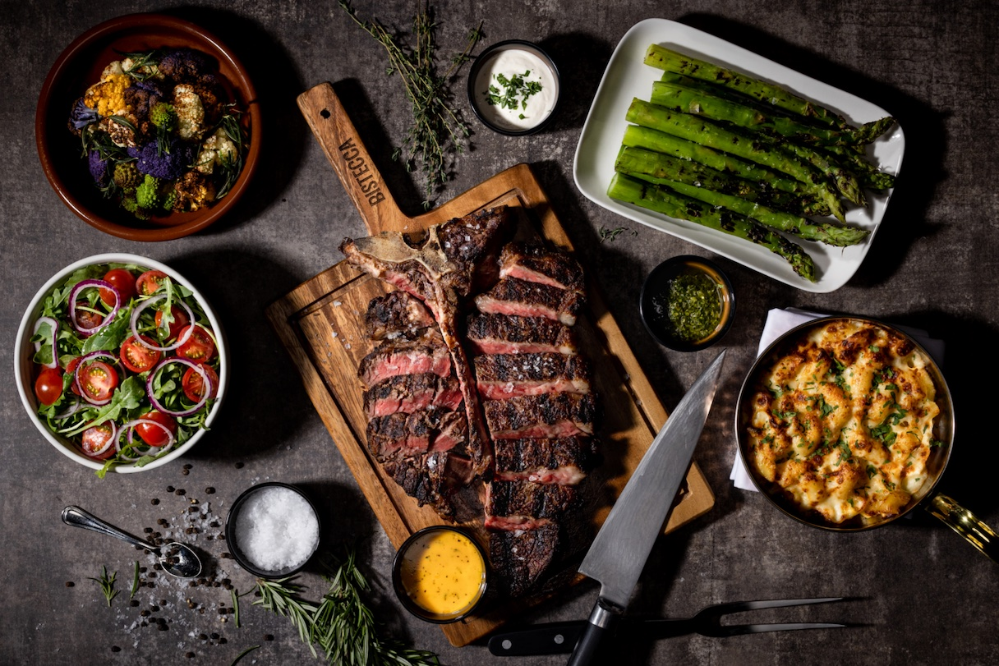

At B-Steakhouse, we bring together the bold flavors of premium international beef and the comforting inspiration of Filipino bistek. From rich marbling to expertly grilled perfection, every steak is crafted to deliver a world-class dining experience.
Sourced from Australia, this premium Wagyu ribeye features exceptional marbling, delivering a buttery texture and rich beef flavor grilled to perfection.

Imported from Japan, our A5 Wagyu striploin offers unmatched tenderness, delicate marbling, and a melt-in-your-mouth finish for the ultimate luxury steak experience.

A Brazilian steakhouse classic, this flavorful picanha cut is prized for its juicy texture, signature fat cap, and smoky char-grilled taste.

Straight from the USA, our USDA Prime T-Bone combines the tenderness of filet mignon and the bold flavor of strip steak in one legendary cut.